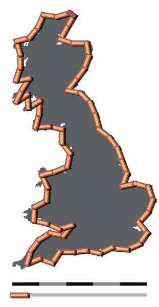
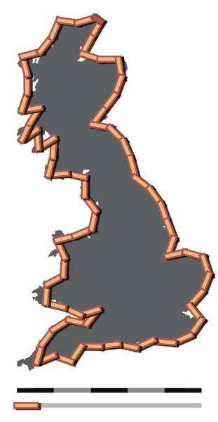

Using Lines
 

Perhaps the most intuitive way of calculating the length of a coastline would be to decide on a line length, say 1km, and then see how many of those lines can fit (as best as one can) around the coast, and then count the number of lines to obtain the length. The issue with this method lies in the complexity of the coastline - for a smooth coastline such as South Africa, a reasonably accurate measurement would be obtained, however, somewhere with a very ragged coastline, such as Norway, would get a much less accurate result, unless the lengths of the lines used were extremely small. Setting aside the difficulty in finding the best fit for such small lines, at which point should one say that the line is small enough? At 100m? At 1m? The smallest theoretical length that could be used is known as a Planck length, which is 1.6x10^-35m (that is 0.000...16m, with there being 35 zeroes in total). This leads on to the problem of fractals - these are curves whose complexity changes depending on measurement scale. The issue is that these fractals, as you zoom in further and further with near-infinite resolution, have increasing lengths - as a matter of fact they tend towards infinity. It is because of this that is there no true accurate measurement of a coastline. The images on the right show how well lines of length 100km and 50km fit around the British coast, with a total measurement of 2,800km and 3,400km respectively.